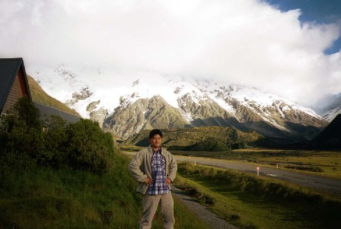
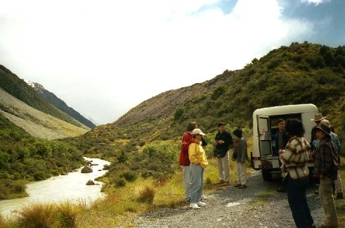
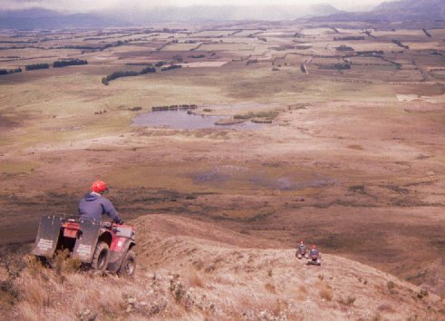
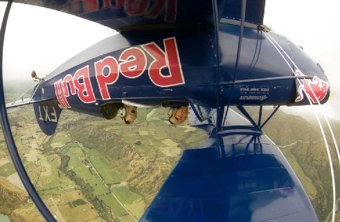

| このページは、2019年3月に保存されたアーカイブです。最新の内容ではない場合がありますのでご注意ください |
ニュージーランド ２ | |
|  マウントクック方面を背に（べっしー） | コメント：シュガー（斎藤） しっかーし！またもやハプニングです。マウントクックで予約してあった部屋に、ちょこっと遅れて行ったら、他の人を入れてしまっって部屋がない！！ もー勘弁！ってことでした。なんとか他のホテルの空いている部屋に泊まれる手はずをしてもらってTHANKS。そして…！ バーに行き食べ物を頼んだんだけど、なかなか来ない！私はけちをつけましたよ！まぁ混んで居たんだからしょうがないと思うけど。結構このとき言葉がでなくてつらかったなぁ。 １２／２９ 次の朝、ヘリコプターでマウントクック周辺を飛び、氷河に着陸してハイクするつもりだったけど風が強くてヘリが飛べなくて中止。 代わりに４WD車で氷河に近づくツアーに参加した。案内者はアルコールドランカー風おやじ。 このおやじは”車はやはりTOYOTAだね”とか”車に乗るとき頭ぶつけたら＄１０だー”など話し方が面白かった。でも氷河ってもほんのちょっとだけ。ちょっとペテン？ 入ってた？。 |
マウントクックでは天気が良かったけど、上空は風が強く残念でした。（ヘリコプター乗りたかった〜〜）でも、ものすご〜〜く景色がいいです。 日本人もたくさんいました。やれやれ・・（って、おまえもだろ） コメント：キッカー マウントクックの頂は結局見られなかった。そうなのだ、マウントクックビレッジではマウントクックの頂はなかなか見られないのだ。 でも、インディージョーンズが見られて良かった。 さて、レンタカーでの最長の移動距離、テ・アナウまでの４３０㎞。曲がり角などほとんどなく、６時間ぐらいで到着。小ぎれいなモーテルに泊まる。 ここでワーホリ中の当クラブ所属の、アル兄こと、山内さんと合流！ 山内さんは、髪の毛を伸ばし、リュックを背負い、サンダルを履き、見違えるように立派な？風来坊とかしていた。（山内さん すいません） |  ４ＷＤ車ツアー |
|  急斜面を下るバギー | １２／３０ テ・アナウは自然豊かさが、売りのところ。氷河が削った山々へのツアーはこちらが入り口。今日は魅惑の土地、ダウトフルサウンドへの一日ツアーに参加。 コメント：シュガー ダウトフルサウンドは、キャプテンクックも入り江に入ることをためらったと言う、怪しげな土地である。フェリーとバスで移動した８Hの旅には原生林、怪しげな霧、そしてジェットコースター風のバス滑降！がある。（地下にある水力発電に行くまで、螺旋状のトンネルをバスが下っていく） 特執筆すべきは氷河によって削られた山の風景ですか。イルカも見れたシネ。 この夜、私の念願だった南十字星を観察。空気が澄んでいて、天の川や他の星々もはっきり見えました。感動です。 (; ;)ホロホロ １２／３１ 日本では大晦日なのに、ガンガン遊ぶ！！３時間の４ＷＤバギー乗りっぱなしアクティビティに参加。牧草地や沼地、山の中、湿地帯、急斜面いろいろアリでメチャおもしろかった。 コメント：キッカー 荒野の中をいいかげんなガイドについて行くツアー(３時間位)。もちろん、バギーは自分で運転する。深さ５０cmの泥沼ビシバシ、車幅ギリギリの橋、山からの最高斜度３０度の下り、おーどこへ行ってもビビッ。ガイドのおやじはどんどん行っちゃうから、自分の体力、技術を信じて気合いを入れてついていこう。なめたら本当に痛い目に合うよ。コツは体はフラフラ、頭は集中だね。休憩の時に出る自家製マフィンはちょーうまい。 |
| 車で１８０㎞。クイーンズタウンに向かう。ここのモーテルも、台所が広く綺麗だった。これで一人あたり２０００円かからないのだから、安い！。 ２１世紀を迎えるカウントダウンを、広場でやるというので、ビールを持参で行く。 ・・・・・言葉がない。みんな踊り狂っている。そーか、海外の年越しはこれか！そばは食わないんだ！（当たり前だろ） コメント：シュガー 年越しの時外国人のパーティに乗り込み踊りまくりました！ビールかけるなよそこ。DJかかりまくり（なにいってんだか不明）、だけどカウントダウンは全員でやった。 それでもパーティはエンドレス模様。明日があるわれわれはつらい。 俺はもっと踊りたかったよ、残念。 １／１ 元旦からアクティビティ！！ 私の趣味で、エアロバティック（曲芸飛行）を推奨！約１０分の飛行だが、こんな小さい飛行機に乗ったことが無いので、メチャ楽しい！！（右写真） コメント：キッカー 絶叫系大好き人間にはスリルよりも爽快感の方が強く感じられる。もっとスゴイ曲芸を求めて、私はずっとパイロットにアピールをしていたのに・・・ 着陸の時、他の技を見せろちゅうの。でも、顔を上げると湖や道路が見えて爽快だったよ。景色もバッチリ。 |  エアロバティック中のべっしー |
| このページは、2019年3月に保存されたアーカイブです。最新の内容ではない場合がありますのでご注意ください |